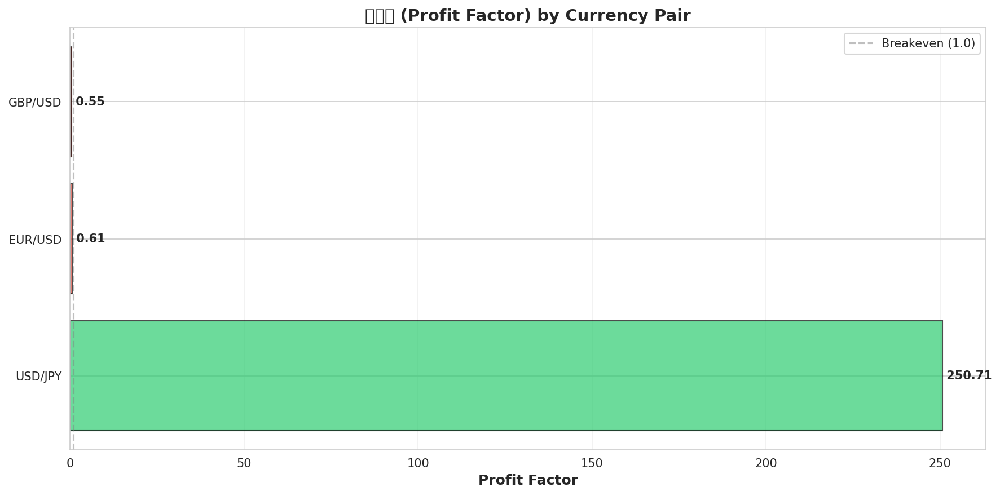
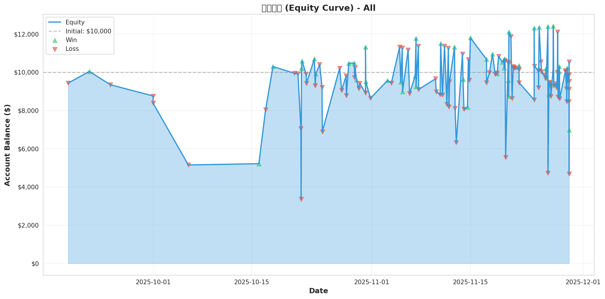
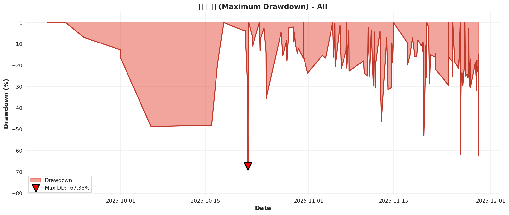

📊 AIFX v2 歷史回測報告 (Historical Backtest Report) ML-Generated Signals
生成時間: 2025-11-29 18:25:52
回測策略: 信號反轉出場 (Signal Reversal Exit)
信號來源: ML模型預測 + 技術分析後備
回測對象: EUR/USD, USD/JPY, GBP/USD × 4 個交易週期
數據期間: 最近90天歷史市場數據
📈 Overall Performance Summary
總交易次數
146
平均勝率
32.8%
平均盈虧比
83.96
總淨盈利
$-9,058
夏普比率 (平均)
-5.09
最大回撤 (平均)
-15.58%
📋 Detailed Results by Pair & Period
| Pair | Period | Timeframe | Total Trades | Win Rate | Profit Factor | Net Profit | Max DD% | Sharpe Ratio |
|---|---|---|---|---|---|---|---|---|
| EUR/USD | intraday | 15min | 9 | 33.3% | 1.85 | $227.00 | -1.56% | 3.75 |
| EUR/USD | swing | 1h | 25 | 36.0% | 0.57 | $-886.00 | -10.62% | -3.59 |
| EUR/USD | position | 1d | 10 | 10.0% | 0.01 | $-5,313.00 | -52.94% | -23.49 |
| EUR/USD | longterm | 1w | 3 | 0.0% | 0.00 | $-479.00 | -4.61% | -11.92 |
| USD/JPY | intraday | 15min | 23 | 26.1% | 0.57 | $-702.98 | -13.07% | -2.94 |
| USD/JPY | swing | 1h | 29 | 51.7% | 1.73 | $2,103.10 | -8.96% | 3.14 |
| USD/JPY | position | 1d | 6 | 33.3% | 0.55 | $-3,023.43 | -64.37% | 0.97 |
| USD/JPY | longterm | 1w | 1 | 100.0% | 999.99 | $297.41 | 0.00% | 0.00 |
| GBP/USD | intraday | 15min | 3 | 33.3% | 0.15 | $-123.00 | -1.44% | -9.03 |
| GBP/USD | swing | 1h | 31 | 19.4% | 0.62 | $-1,542.00 | -18.63% | -2.48 |
| GBP/USD | position | 1d | 4 | 50.0% | 1.43 | $540.00 | -10.65% | 3.04 |
| GBP/USD | longterm | 1w | 2 | 0.0% | 0.00 | $-156.00 | -0.11% | -18.52 |
📊 Performance Charts
Win Rate By Period All

Profit Factor By Pair
Equity Curve All
Trade Distribution All

Performance Heatmap

Drawdown All
🎯 Key Insights
- 最佳貨幣對: USD/JPY (swing) with $2,103.10 profit (51.7% win rate)
- 最佳交易週期: swing with total profit $-324.90 (avg win rate: 35.7%)
- 整體表現: Average win rate across all pairs and periods: 32.8%
🤖 ML Model Performance
此回測使用ML模型生成交易信號。當ML API不可用時，會自動切換到簡單技術分析後備策略（SMA交叉）。
- 信號生成方式: ML預測 (主要) + 技術分析 (後備)
- 歷史數據窗口: 最近100根K線
- 出場策略: 信號反轉（long→short, short→standby）
⚠️ Risk Warnings
⚠️ 這是歷史模擬回測結果，不代表未來表現。實際交易涉及重大損失風險。
• 回測結果基於歷史數據，市場條件可能發生變化
• ML模型可能存在過擬合風險
• 實際交易可能涉及滑點、手續費等額外成本
• 過去的表現不保證未來的結果
• 請謹慎交易，做好風險管理